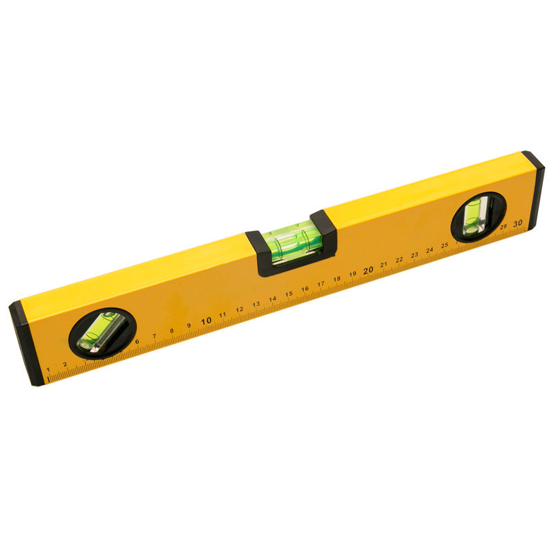

ALIGN is a device made for precision crafting and measurement. A traditional spirit level, as seen in the figure below, consists of a tube of liquid with a small air bubble which responds very precisely to gravity. This allows the user to measure how level a surface is. However, the alignment of the tubes limit the use of the spirit level to just the three angles shown.
ALIGN aims to recreate this traditional tool with modern technology. Using the GY-521 IMU unit, a feather ESP 32 microcontroller, a multicolor RGB LED, and some simple user interface components, ALIGN is able to also capture the level of one surface and compare it to another.
An inertial measurement unit (IMU) is used to measure the orientation of the device. The controls of the device feature an analog potentiometer, two digital buttons, and a switch. The device contains an internal 2500 mAh 3.7 V LiPo battery. The switch is used to connect the enable pin to ground, acting as an on/off switch for the device. The two buttons are for setting the target level: the black button sets the current orientation as the target and the yellow button sets true flat as the target. The potentiometer is used to adjust the precision of measurement. Turning it to the left lowers the threshold and makes for a very precise level while turning it to the right loosens up the constraints for what is considered the same orientation. A multicolor RGB LED is used to give the user feedback on various actions. When it turns green, it indicates that the target level has been reached. Otherwise, the red and blue lights will be on with intensities corresponding to how far away from the target the orientation is. The blue light corresponds to the x axis and red light corresponds to the y axis. As ALIGN gets closer to the target, the red/light dims indicating this information to the user. Having two lights represent two axes lets the user know which axes they need to adjust to reach the target. Additionally, when the target set button is pressed, the light turns bright white for feedback and when the target reset button is pressed, the light turns off, letting the user know that commands have been received. Charging and reprogramming the device can be accessed through the small hole to the micro USB connection on the side of the case.
In designing ALIGN, I first created a schematic outlining the components used and the connections necessary for the electronics to function correctly. This is shown below in the schematic. The IMU is operated over SDA and SCL using I2C communication. The buttons are pulled down with 10kOhm resistors and connected to digital pins. The potentiometer is hooked up to HIGH and LOW and connected to an analog pin. The enable switch simply connects ground to the enable pin, which turns off the microcontroller. Three digital output lines control PWM to each of the individual red, green, and blue components of the RGB LED. Additionally, the LiPo battery is simply hooked up to the JST connector and can be charged through the microUSB.
After planning out the schematic, I soldered together a protoboard in order to make my circuit robust and condensed. This assembly is shown in the figure below. As seen, male and female header pins are added such that the main components (Feather ESP32, IMU, and RGB LED) are removable for future projects or swapping out. I kept most of the wires on the back side of the protoboard so that the front stayed clean for user interface. The front simply has the buttons, switch, and potentiometer for control and the RGB LED for user input. As seen a special 90 degree connector is used for the RGB LED and a piece of electrical tape is below it to prevent shorts on the protoboard.

After finishing the electrical components, I wrote the code outlined in the additional documents section. The code has sufficient comments and explanations for implementing the specifications described in the first section. Lastly, I made a case for the device so that it looked like a finished product. This CAD model is shown below and can be downloaded in the additional documents section.
As seen in the case design, there are ridges on the side of the device for better grip, four mounting holes for securing the protoboard and the top cover. These mounting holes are designed for a M3 heat insert and M3 machines screws to screw in. The box is deep enough to house the full protoboard and wide enough so that the battery can live inside of it as well. The bottom left side of the box has a small hole for a micro USB cable. The top cover has a hole for the LED to poke out of and another larger slot for access to the user controls. The printed case and completed electrical components are shown below. A finished assembly can be seen in both the video and in figure 1 at the top of the report.